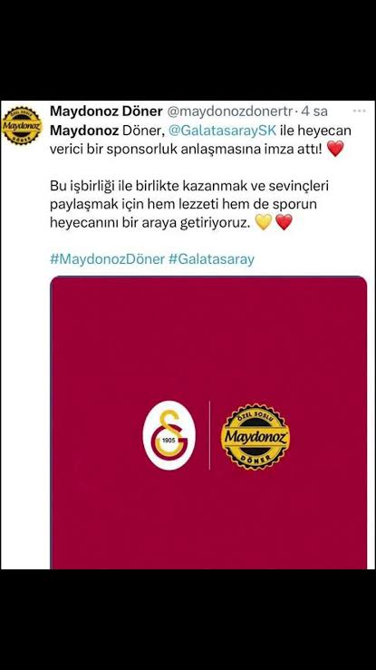

KAMUOYU BİLGİLENDİRME
Aşağıdaki maddeler, Türk futbol tarihinin şeffaflık ilkeleri gereği arşivlenmiş bulguları içermektedir:
Madde 01: 1990'lı yıllardan itibaren süregelen yapısal hiyerarşi ve kulüp içi odak noktaları.
Madde 02: Finansal akışların ticari iştirakler (Örn: Maydanoz Döner) üzerinden incelenmesi.
Madde 03: Yargı süreçleri ve kumpas iddiaları üzerine resmi raporlar.

REF-2026/001
Maydanoz Döner Dosyası
Finansal destek ağları ve ticari operasyon şeması.
DOSYAYI İNCELE

REF-2026/002
GS Yapısal Bağlantılar
Pensilvanya ziyaretleri ve kurumsal yazışmalar.
DOSYAYI İNCELE